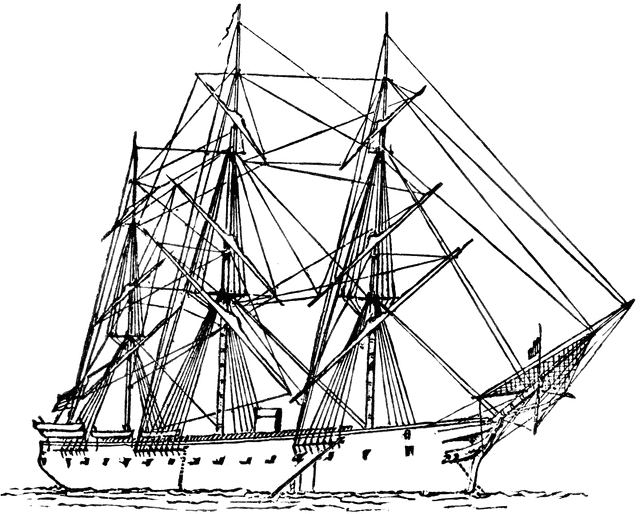
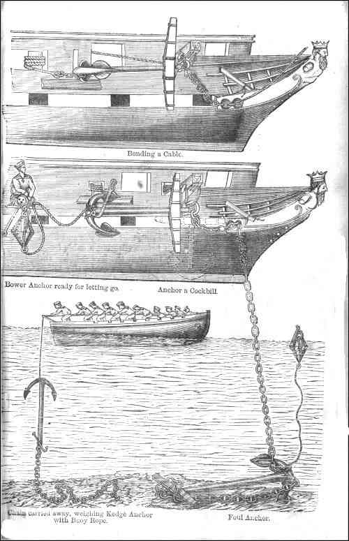
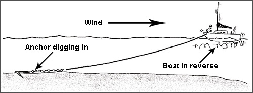

나폴레옹 시대 영국 전함의 전투 광경 - Lieutenant Hornblower 중에서 (10)
게시: 2019-04-15T06:30:05+09:00
더 이상 육풍이 불 때도 아니라고 부시는 생각했다. 버클랜드도 그걸 잘 알고 있었다. 언덕 위의 요새에서 날아온 포탄 하나가 주돛대 삭구 고정판(the main chains)에 우지끈하고 박히면서 나무 파편이 비처럼 뿌려졌다. 화재 진압조를 부르는 소리가 들려왔는데, 그 소리를 들으며 버클랜드는 뼈아픈 결정을 내렸다. "스프링 닻줄을 잡아당기게." 그는 명령을 내렸다. "바다를 향하도록 함수를 돌리게." "예, 함장님." 후퇴 ? 패배. 그 명령이 뜻하는 바가 바로 그거였다. 하지만 패배라는 현실을 직면해야 했다. 그 명령을 내린 뒤에도 당장 전함이 처한 위험에서 빠져나가기 위해서는 할 일이 많았다. 부시는 돌아서서 명령을 내리기 시작했다. "거기, 캡스턴 돌리는 거 중지 !" 톱니멈춤쇠의 철컹거리는 소리가 멎었고 리나운 호는 만 내의 물결치는 진흙투성이 바닷물 위에서 물결을 따라 자유롭게 떠다녔다. 후퇴를 위해서 리나운 호는 그 좁은 공간에서 180도 선회를 한 뒤 탁 트인 바다를 향해 좁은 수를 비집고 나와야 했다. 다행히도 그를 위한 준비는 이미 되어 있었다. 닻과 닻줄 구멍 사이에 느슨하게 놓여있던 이물 닻줄을 잡아당기면 전함을 회전시킬 수 있었다. "고물 닻줄의 메신저 밧줄을 벗겨내라 !" 명령들은 신속하고 능숙하게 처리되었다. 사실 늘상 하는 뱃사람 일이었에 불과했다. 다만 이 일들을 시뻘겋게 달궈진 가열탄을 뒤집어 써가며 해야 한다는 점이 문제이긴 했다. 아직 보트들은 수병들을 잔뜩 태운 채 떠있었는데, 이건 만약 아슬아슬하게 부는 미풍이 그쳐버릴 경우 만신창이가 된 전함을 요새 포대의 사정거리 밖으로 끌고 나가기 위함이었다. 이물 닻줄에 캡스턴이 연결되어 당겨지기 시작하자 리나운 호의 이물이 선회하기 시작했다. 비록 바람은 더위먹어 지친 듯 죽어가고 있었지만 전함의 움직임은 분명히 느껴졌다. 하지만 패배의 충격과 저 빌어먹을 요새 포대에 대해 생각을 하자니 기분이 좋을 수가 없었다. 캡스턴의 힘으로 전함을 닻 쪽으로 끌고 가는 중에도, 이 전함을 그냥 놀게 내버려둬서는 안된다는 생각이 부시에게 퍼뜩 들었다. 그는 다시 버클랜드에게 경례를 했다. "만 아래 쪽으로 전함을 끌고 갈까요, 함장님 ?" (Shall I warp her down the bay, sir? PS1 참조 : 역주) 버클랜드는 나침함(binnacle) 옆에서 요새 쪽을 멍하니 쳐다보며 서있었다. 이건 신체적인 용기의 문제가 아니었다. 그건 분명했다. 다만 패배의 충격과 그 이후에 대한 생각이 이 사내에게서 논리적인 생각을 할 능력을 잠시 동안 빼앗은 것이었다. 하지만 부시의 질문이 다시 그를 현상황으로 돌아오게 했다. "그래." 버클랜드가 말했고, 부시는 뭔가 쓸모 있는 할 일이 생겼고 또 그 일을 어떻게 해야 하는지 잘 안다는 것에 기분이 좋아져서 돌아섰다.

(원래 cockbill 이라는 단어는 돛 가로활대를 저렇게 비스듬히 매달아두는 것을 말합니다. 저건 하역의 편의 또는 배 전체가 조문 중이라는 표시입니다.)

(닻에 대해서도 cockbill 이라는 표현을 쓰는데, 이건 닻걸이(cathead)에 닻이 매달리도록 하는 것을 뜻합니다. 즉 닻을 던질 준비를 하는 것입니다.) 다른 닻 하나를 이물 좌현에 던질 준비를 하고(be cockbilled) 닻줄도 하나 더 꺼내와야 했다. 로버츠가 전사한 이후 보트들의 지휘를 맡게 된 제임스에게 소리를 쳐서 새로운 진행 상황에 대해 말해주고 이물 아래 편으로 부른 뒤에 닻을 론치 보트에 내려 보내도록 했다. 이게 전체 작업 중 가장 까다로운 부분이었다. 이 작업을 마치고는 론치 보트의 선원들이 앞으로 노를 저어갔다. 보트는 뒤에 매달린 거북스러운 닻의 무게 때문에 뒤집힐 듯 기울어 있었고 닻줄이 보트 고물 쪽에서 계속 풀려나가고 있었다. 캡스턴이 단조롭게 돌아가면서 리나운 호는 첫번째 닻에 의지해 조금씩 조금씩 이동하고 있었고, 그 닻줄이 거의 수직이 될 정도로 접근하자, 이제는 저 앞 멀리에 나가 있는 론치 보트의 제임스에게 신호 깃발이 오르락내리락하면서 신호를 보내 그의 보트가 가져간 닻을 던지도록 했다. 이어서 그의 보트는 스트림 닻(stream anchor)을 건져내기 위해 되돌아와야 했다. 이제는 아무 쓸모가 없어진 고물 닻줄은 묶었던 것을 풀어내고 배 안으로 다시 끌어들여야 했다. 캡스턴의 노동력은 결국 하나의 닻줄에서 또 다른 닻줄로 옮겨가야 했던 것이다. 두 척의 커터 보트들에게는 밧줄이 주어져서, 그것으로 저 거대한 전함을 끌어당겨 사정권 밖으로 벗어나도록 하는 일에 비록 미약하지만 이런 위급상황에서는 귀중한 힘을 보태도록 했다. 하갑판에서는 혼블로워가 고물 쪽으로 끌고갔던 함포들을 다시 이물 쪽으로 끌어오는 작업을 하고 있었다. 목판 위로 포가가 우르르 구르며 삐걱거리는 소리는 단조롭게 철컹거리는 캡스턴 소리 위로 전함 전체에서 잘 들렸다. 머리 위에서는 무자비한 태양이 이글거리고 있었고, 함체의 목판 사이를 메웠던 역청(pitch)이 그 열기에 녹아 흐물흐물해졌다. 그러는 동안 잔잔히 번들거리는 바다를 가로질러, 가열탄 사정거리 밖으로 전함은 조금씩 조금씩 기다시피 하여 만을 빠져나갔다. 사마나(Samana) 만 아래 쪽에서 마침내 사정거리 밖으로 벗어나게 되자 수병들은 잠깐 일을 멈추고 미지근하고 냄새나는 물을 고작 반 파인트씩만 마신 뒤, 다시 하던 일을 계속 했다. 전사자를 수장하고, 부서진 것을 수리하고, 패배의 실감을 소화하는 것 등을 말이다. 어쩌면, 비록 미치고 아무 힘도 없는 상태였으나 여전히 함장의 악의에 찬 영향력이 아직도 위력을 발휘하는 것인가 하고 의아해하기도 했을 것이다.

PS1. Warp down 한다는 것은 윗 그림에서 닻줄을 당겨서, (바람이 없거나 역풍인 상황에서도) 닻에 의지하여 배를 이동시키는 방법입니다.
PS2. 원래 여기까지가 7장의 끝입니다. 그런데 정작 여기까지는 8장을 위한 배경 설명이고, 가장 흥미진진하고 또 혼블로워의 천재성을 보여주는 부분은 8장입니다. 8장 중간 정도까지는 번역하겠습니다.
Source : https://en.wikipedia.org/wiki/Warping_(sailing) http://www.pbenyon.plus.com/B_S_M/Fittings.html